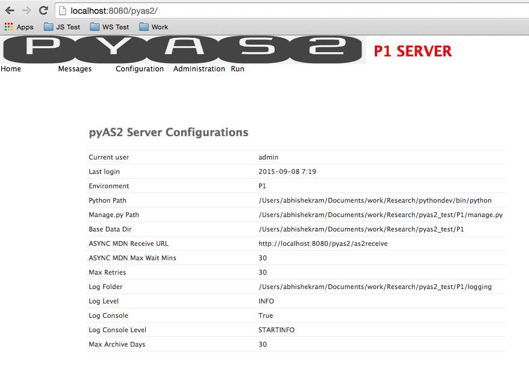
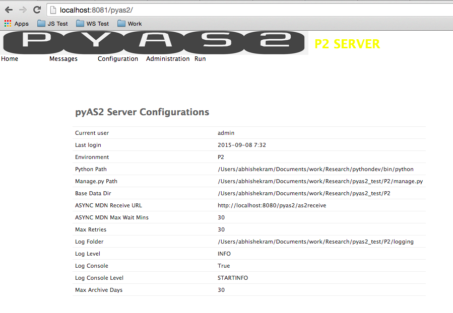

Quick-start Guide¶
Now that we have completed installation and configuration of pyAS2, we are ready to start transferring files.
Let’s get started by sending a signed and encrypted file from one pyAS2 server P1 to another pyAS2 server P2. Do note that these two are separate installations of pyAS2.
Installing the Servers¶
Create a Django project called P1 and follow the installation guide and run python manage.py runas2server to start P1 at http://localhost:8080/pyas2/
Create one more Django project called P2 and follow the same installations instructions, however now we will need to change the pyAS2 port as P1 is using the default port. To do this update the port to 8081 in the global settings and run python manage.py runas2server to start P2 at http://localhost:8081/pyas2/
Creating the certificates¶
We need to generate a Public and Private key pair each for the two servers. P1 uses its private key to sign the message which is verified by P2 using P1's public key. P1 uses the P2's public key to encrypt the message which is decrypted by P2 using its private key.
To generate the public and private key pair use the below commands
$ openssl req -x509 -newkey rsa:2048 -keyout P1_private.pem -out P1_public.pem -days 365
Generating a 2048 bit RSA private key
.....+++
................................................................................................+++
writing new private key to 'P1_private.pem'
Enter PEM pass phrase:
Verifying - Enter PEM pass phrase:
-----
You are about to be asked to enter information that will be incorporated
into your certificate request.
What you are about to enter is what is called a Distinguished Name or a DN.
There are quite a few fields but you can leave some blank
For some fields there will be a default value,
If you enter '.', the field will be left blank.
-----
Country Name (2 letter code) [AU]:IN
State or Province Name (full name) [Some-State]:Karnataka
Locality Name (eg, city) []:Bangalore
Organization Name (eg, company) [Internet Widgits Pty Ltd]:P1
Organizational Unit Name (eg, section) []:AS2
Common Name (e.g. server FQDN or YOUR name) []:p1as2
Email Address []:
$ cat P1_public.pem >> P1_private.pem
$ openssl req -x509 -newkey rsa:2048 -keyout P2_private.pem -out P2_public.pem -days 365
Generating a 2048 bit RSA private key
..............................+++
............................................................................................................+++
writing new private key to 'P2_private.pem'
Enter PEM pass phrase:
Verifying - Enter PEM pass phrase:
-----
You are about to be asked to enter information that will be incorporated
into your certificate request.
What you are about to enter is what is called a Distinguished Name or a DN.
There are quite a few fields but you can leave some blank
For some fields there will be a default value,
If you enter '.', the field will be left blank.
-----
Country Name (2 letter code) [AU]:IN
State or Province Name (full name) [Some-State]:Karnataka
Locality Name (eg, city) []:Bangalore
Organization Name (eg, company) [Internet Widgits Pty Ltd]:P2
Organizational Unit Name (eg, section) []:AS2
Common Name (e.g. server FQDN or YOUR name) []:p2as2
Email Address []:
$ cat P2_public.pem >> P2_private.pem
Configure P1¶
P1 needs to be configured before it can start sending files, open the web UI and follow these instructions:
- Navigate to Configuration->Private Certificates->Add private certifcate.
- Choose the file P1_private.pem in the certificate field, enter the passphrase and save the Private Certificate.
- Next navigate to Configuration->Public Certificates->Add public certifcate.
- Choose the file P2_public.pem in the certificate field and save the Public Certificate.
- Now navigate to Configuration->Organization->Add organization.
- Set Name to P1, As2 Name to p1as2 and set the Signature and Encryption keys to P1_private.pem and save the Organization.
- Next navigate to Configuration->Partner->Add partner.
- Set Name to P2, As2 Name to p2as2 and Target url to http://localhost:8081/pyas2/as2receive
- Under security settings set Encrypt Message to 3des, Sign Message to SHA-1, Signature and Encryption keys to P2_public.pem.
- Under MDN settings set MDN mode to Synchronous and Request Signed MDN to SHA-1.
- Save the partner to complete the configuration.
Configure P2¶
P2 needs to be configured before it can start receiving files, open the web UI and follow these instructions:
- Navigate to Configuration->Private Certificates->Add private certifcate.
- Choose the file P2_private.pem in the certificate field, enter the passphrase and save the Private Certificate.
- Next navigate to Configuration->Public Certificates->Add public certifcate.
- Choose the file P1_public.pem in the certificate field and save the Public Certificate.
- Now navigate to Configuration->Organization->Add organization.
- Set Name to P2, As2 Name to p2as2 and set the Signature and Encryption keys to P2_private.pem and save the Organization.
- Next navigate to Configuration->Partner->Add partner.
- Set Name to P1, As2 Name to p1as2 and Target url to http://localhost:8080/pyas2/as2receive
- Under security settings set Encrypt Message to 3des, Sign Message to SHA-1, Signature and Encryption keys to P1_public.pem.
- Under MDN settings set MDN mode to Synchronous and Request Signed MDN to SHA-1.
- Save the partner to complete the configuration.
Send a File¶
We are now read to send a file from P1 to P2, to do so follow these steps:
- Open the P1 web UI and navigate to Run->Send Message.
- Select the Organization as p1as2(P1) and Partner as p2as2(P2).
- Now select the file to send and click Send File.
- The status of the file transfer can be viewed at Messages->All Messages.
- Once file transfer is completed you will a green tick in the status column.
- We will also see a similar entry in the web UI of P2.

- We can see basic information on this screen such as Partner, Organization, Message ID and MDN.
- We can also view the MDN and Payload by clicking on the respective links.
Conclusion¶
We have successfully demonstrated the core functionality of pyAS2 i.e. sending files from one system to another using the AS2 protocol. For a more detailed overview of all its functionality do go through the detailed docs.